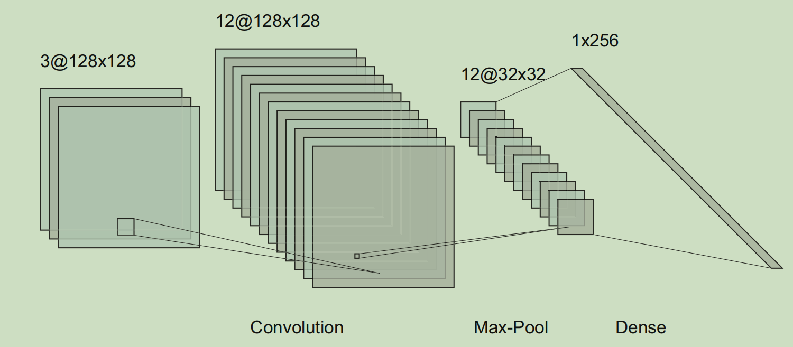

卷积神经网络的复杂度分析
前言
卷积神经网络（Convolutional Neural Network, CNN）是一种深度学习模型，其在计算机视觉和自然语言处理等领域有着广泛的应用.
其发展历程可以追溯到20世纪80年代，最初被用于图像处理领域. 但是，由于当时计算机的性能较弱，卷积神经网络的应用一直受到限制. 直到2012年，Alex Krizhevsky等人在ImageNet比赛中使用深度卷积神经网络AlexNet，大幅度地降低了图像分类误差，从而推动了卷积神经网络的发展. 随后，VGG、GoogLeNet、ResNet等更加深层的卷积神经网络被提出，并在各种视觉任务中取得了优异的成绩.
本文简要介绍卷积神经网络，并总结分析其时间和空间复杂度.
卷积神经网络的基本概念
CNN通常包含卷积层、池化层和全连接层，其架构如图1所示. 其中，卷积层为CNN的核心，用于提取局部特征，并且具有更少的参数量.

卷积操作可以用两个张量运算来形象地定义. 假定输入特征 $\mathcal{X} \in \mathbb{R}^{H \times W \times I}$ ，其中 $H$ 为特征高，$W$ 为特征宽，$I$ 为特征通道（输入通道数），设计一个卷积核 $\mathcal{K}\in\mathbb{R}^{K_1\times K_2 \times I\times O}$，其中 $K_1和K_2$ 为卷积核大小，$O$ 为输出通道数，$\mathbf{b}_o$ 为bias项，则卷积运算可以表示为
- $h=(h’-1)S+k_1\in {1,2,. . . ,H+2P}$
- $w=(w’-1)S+k_2\in {1,2,. . . ,W+2P}$
- $S$为步长，$P$为 zero-padding 大小
卷积运算的输出特征为 $\mathcal{Y} \in \mathbb{R}^{H’\times W’\times O}$，其中 $H’=(H+2P-K)/S+1$，$W’=(W+2P-K)/S+1$.
单个卷积层的复杂度分析
时间复杂度
通常，我们可以通过模型的运算次数来评估其时间复杂度，用FLOPs（浮点运算次数）作为衡量标准. 在分析时间复杂度之前，让我们先来看看单个卷积层的FLOPs.
一个卷积层的运算量可以通过以下公式计算得出：
其中，$K_1$ 和 $K_2$ 表示卷积核的大小，$I$ 表示输入通道的数量，$O$ 表示输出通道的数量，$H’$ 和$W’$ 分别表示输出特征的高度和宽度.
- $(I × K_1 × K_2)$ 表示一个输出特征点所需的乘法运算量（输入特征和卷积核进行乘法运算），
- $(I × K_1 × K_2 - 1)$ 表示一个输出特征点所需的加法运算量，
- $-1$ 是因为$n$ 个元素相加仅需要$n-1$ 次操作，
- $+1$ 表示偏置项，
- $O × H’ × W’$ 表示输出特征点的数量.
简化后的FLOPs可以表示为：
在不考虑偏置的情况下，我们只需要减去偏置项，即：
因此，我们可以得到单个卷积层的时间复杂度为
空间复杂度
除了时间复杂度外，空间复杂度也是评估卷积神经网络（CNN）性能的重要指标之一. 单个卷积层的空间复杂度可以用参数量 (params) 表示，包括卷积核和bias项，即
在不考虑bias情况下，$params= K_1 \times K_2 \times I \times O$.
另外，空间复杂度通常也考虑中间过程中的特征图，原因在于模型在运行时特征图也需要在内存中交互.
输入特征的尺寸为 $H\times W\times I$，卷积核的尺寸为 $K_1\times K_2\times I\times O$，输出特征的尺寸为 $H’\times W’\times O$，则单个卷积层在内存中所需占用的空间大小为 $H\times W\times I + K_1\times K_2\times I\times O + H’\times W’\times O$.
综上，单个卷积层的空间复杂度为
$\mathcal{O}(I\times K_1\times K_2\times O + H\times W\times I + H’\times W’\times O).$
[]
卷积神经网络整体的复杂度分析
相较于单层的时间复杂度，卷积神经网络整体的时间复杂度为
其中，$L$ 为整体网络中卷积层数，$l$ 为第$l$ 个卷积层，$C^l$ 为第$l$层的输出通道数，$K^l_1$ 和$K^l_2$ 为第 $l$ 层的卷积核尺寸，$H^l$ 和 $W^l$ 为第 $l$ 层的输出特征尺寸.
卷积神经网络整体的空间复杂度为
前者为卷积核的权重参数，后者为特征图参数. 一些情况下，特别是当模型层数很多时，后者特征图的空间复杂度会占据模型整体较大比例的参数量. 因此，在卷积神经网络的设计和优化中，需要考虑如何降低特征图的空间复杂度，以达到更好的计算效率和更小的模型大小.
在卷积神经网络中，全连接层也是影响模型空间复杂度的重要部分，上式并不包含全连接层参数计算.
结论
本文对卷积神经网络的复杂度进行了分析，包括单个卷积层和卷积神经网络整体的时间复杂度和空间复杂度.
卷积神经网络中还包含池化层和全连接层，由于池化层和全连接层较为简单，笔者并未进行详细分析. 在实际应用中，整个模型的时间和空间复杂度取决于所有层组合的结果，需要实际情况实际分析. 另外，现有的一些优化技术，如参数共享、量化和张量分解等，也被应用于卷积神经网络模型中.
本人水平有限，如有错误，望及时指出，谢谢！
参考文献
- K. He, J. Sun, Convolutional Neural Networks at Constrained Time Cost, (2014).
- 知乎：卷积神经网络的复杂度分析
- Y. Liu, Tensor Computation for Data Analysis. Springer.